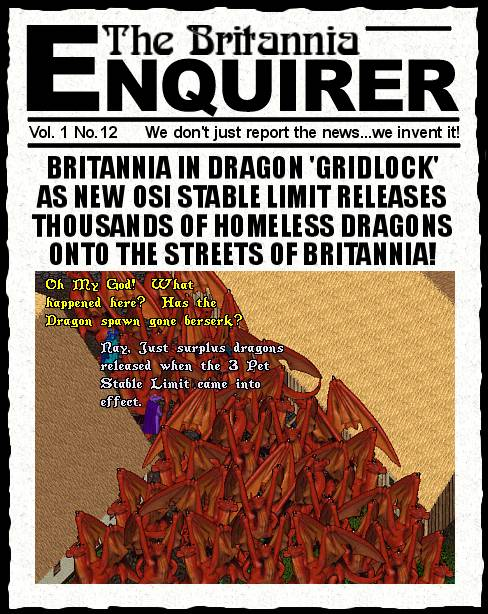

This issue came to me when I overheard a tamer whining to his friend that he had 40 dragons stabled and "What right did OSI have to limit the number of pets he could have?". All of a sudden I got this vision of the entire surface of Britannia covered in wall-to-wall dragons if OSI decided to release surplus pets instead of deleting them. Don't want to be near a stable when that happens, hehe. Can't say that I think 5 stabled pets per character is all that unreasonable, but then I am not a tamer :)
later...Tryon